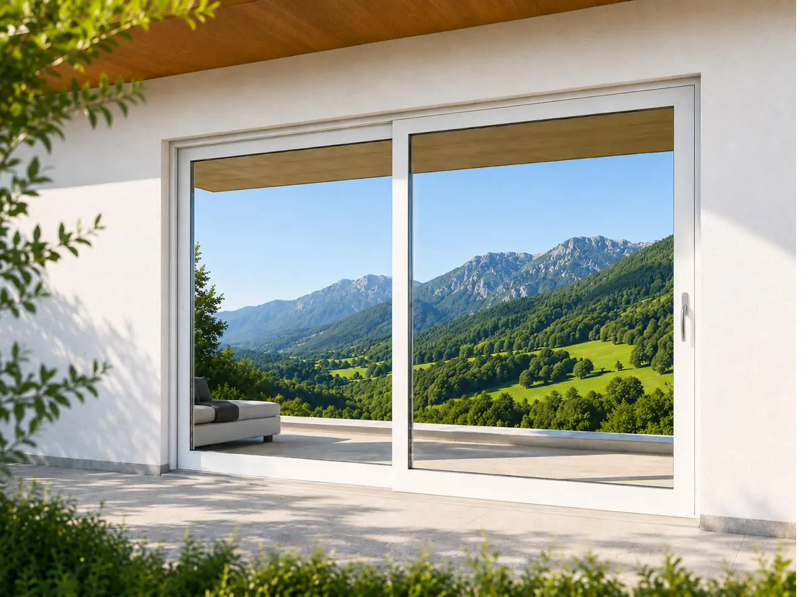
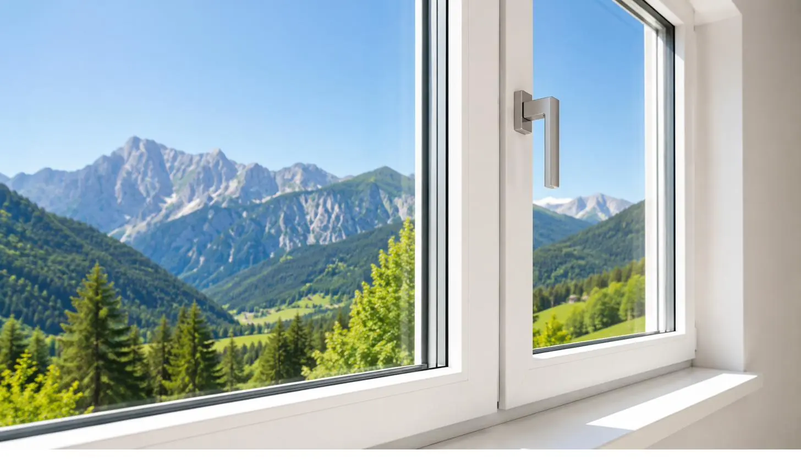

01 / 02
01
Serramenti
Finestre e scorrevoli in PVC
Più luce, più silenzio, più comfort. Progettiamo ogni apertura sulle misure reali della casa e seguiamo la posa fino all’ultima finitura.
- Profilo a più camere da 86 mm
- Vetrocamera doppia o tripla
- Battenti, scorrevoli e forme speciali
- Soglie ribassate e oscuranti integrati